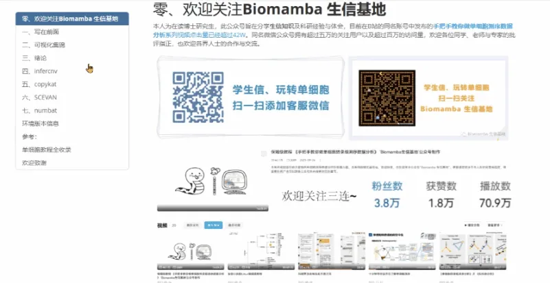

一文学会四种scRNA-seq拷贝数变异分析| 肿瘤异质性分析必备
原文：https://mp.weixin.qq.com/s?__biz=MzAwMzIzOTk5OQ==&mid=2247535878&idx=2&sn=6d3315ba0d9d3f3246665f11f30adfb9&chksm=9b3c3456ac4bbd401603ab6bdf8960c5a26a9699a905732853799d171729dc8024b591398d3a#rd 合集：单细胞教程全收录

scRNA-seq拷贝数变异分析

 **拷贝数变异（Copy number alterations，以下简称CNA；infercnv包也习惯描述为 Copy Number Variation，CNV）是一种重要的基因组变异，在癌症的发生和发展过程中起着至关重要的作用。确定肿瘤细胞中CNA的特征对早期肿瘤检测、划分肿瘤异质性、了解肿瘤进展模式和揭示耐药机制具有重要意义。随着单细胞RNA测序（scRNA-seq）的蓬勃发展，研究人员开发出了多种计算方法来从scRNA-seq研究中推断CNA。目前从scRNA-seq数据中推断CNA的计算方法大致可分为两类。一类是基于表达的，即直接从基因表达推断CNA。这类工具包括inferCNV、copykat和SCEVAN。这些工具的工作原理是，CNA扩增（AMPs）或缺失（DELs）将分别导致受影响基因组区域内基因的上调或下调。InferCNV利用基因窗口的校正移动平均数；copykat采用综合贝叶斯分割方法；SCEVAN采用多通道分割算法。第二类将基因表达与等位基因信息相结合，相关工具有Numbat和CaSpER等。**更多单细胞技巧教程可见：限时回归！两个月时间，手把手教会你scRNA-seq数据分析！专题教程可见：R语言scRNA-seq拷贝数变异分析专题
更多生信教程可见： 生信基地终身订阅须知
本教程基于Linux中的Rstudio环境演示，计算资源不足的同学可参考：选择西柚云的11个理由
足够支持你完成硕博生涯的生信环境
独享服务器，生信分析不求人
**拷贝数变异（Copy number alterations，以下简称CNA；infercnv包也习惯描述为 Copy Number Variation，CNV）是一种重要的基因组变异，在癌症的发生和发展过程中起着至关重要的作用。确定肿瘤细胞中CNA的特征对早期肿瘤检测、划分肿瘤异质性、了解肿瘤进展模式和揭示耐药机制具有重要意义。随着单细胞RNA测序（scRNA-seq）的蓬勃发展，研究人员开发出了多种计算方法来从scRNA-seq研究中推断CNA。目前从scRNA-seq数据中推断CNA的计算方法大致可分为两类。一类是基于表达的，即直接从基因表达推断CNA。这类工具包括inferCNV、copykat和SCEVAN。这些工具的工作原理是，CNA扩增（AMPs）或缺失（DELs）将分别导致受影响基因组区域内基因的上调或下调。InferCNV利用基因窗口的校正移动平均数；copykat采用综合贝叶斯分割方法；SCEVAN采用多通道分割算法。第二类将基因表达与等位基因信息相结合，相关工具有Numbat和CaSpER等。**更多单细胞技巧教程可见：限时回归！两个月时间，手把手教会你scRNA-seq数据分析！专题教程可见：R语言scRNA-seq拷贝数变异分析专题
更多生信教程可见： 生信基地终身订阅须知
本教程基于Linux中的Rstudio环境演示，计算资源不足的同学可参考：选择西柚云的11个理由
足够支持你完成硕博生涯的生信环境
独享服务器，生信分析不求人
本教程可视化集锦 -Biomamba
-Biomamba

所见即所得
学习手册以html文件格式提供，可在浏览器中打开并翻阅学习：

教程目录 ：
一、写在前面
二、可视化集锦
三、绪论
3.1 定义
3.2 主要研究成果
（1）区分肿瘤细胞与正常细胞
（2） 推断的拷贝数变异（CNA）谱的准确性
（3） 亚克隆结构推断准确性的评估
（4）计算效率
3.3 小结
四、infercnv
4.1 简介
4.2 安装
4.3 输入文件
4.4 infercnv workflow
4.5 infercnv实战
（1）数据概况
（2）infercnv流程
（3）热图优化
（4）小提琴图
五、copykat
5.1 copykat介绍
（1）简介
（2）copykat工作流程描述
（3）性能评估
（4）实体肿瘤中肿瘤细胞和正常细胞的分类
（5）应用于其他scRNA-seq技术
（6）推断乳腺肿瘤的克隆亚结构
（7）小结
5.2 copykat流程（1）安装（2）counts矩阵预处理（3）常用参数（4）copykat（5）整理数据（6）绘制热图5.3 copykat实战（1）数据概况（2）copykat（3）整理数据（4）热图绘制（5）探究一下拷贝数变异与原来亚群之间的关系（6）CNA score小提琴图
六、SCEVAN****
6.1 安装R包
6.2 加载R包6.3 单样本分析（1）加载数据（2）执行分析（3）结果查看6.4 多样本分析（1）加载数据 （2）执行分析（3）结果查看6.5 联合Seurat对象（1）创建Seurat对象**** （2）将拷贝数变异结果加入Seurat对象 （3）降维分群（4）可视化****
七、numbat********
7.1安装R包
7.2加载R包************7.3 数据下载7.4 等位基因数据准备（1）运行参数解释 （2）示例脚本（3）可能出现的报错（4）执行分析7.5 运行numbat（1）运行参数解释********（2）运行numbat7.6 结果解读（1）拷贝数景观和单细胞系统发育 （2）在系统发育上完善亚克隆（3）共识拷贝数区段（4）pseudobulks水平拷贝数变异（5）进化树八、环境版本信息 九、参考十、单细胞教程全收录****十一、欢迎致谢
文末下载链接中包含以下内容：

测试文件约55.57GB ，大家注意按需下载！

往期订阅


生信基地现已开放终身订阅，现已包含几十篇订阅资料，未来37年持续更新：那就开放一个终身订阅吧~
2025已更新订阅内容：
《Cell》复现|中性粒细胞scRNA-seq图谱阐明抗肿瘤抗原呈递效力
《Cancer Cell》|时空单细胞揭示CRC的PD-1治疗免疫细胞动态
scRNA-seq数据基础分析手册(2025最新修订)代码复现|吞噬作用增强肿瘤中巨噬细胞的氧化代谢和免疫抑制特征一文学会scRNA Velocity剪切速率分析
一文学会四种scRNA-seq轨迹分析
一文学会四种scRNA-seq细胞通讯分析
一文学会四种基因共表达网络分析
 解锁前需阅读：2025订阅须知
解锁前需阅读：2025订阅须知
学习手册链接：
资料连接：
https://pan.baidu.com/s/1wGR2oZT3bw7wkbOdUI6hnA
联系客服微信Biomamba_zhushou获取提取码

-Biomamba